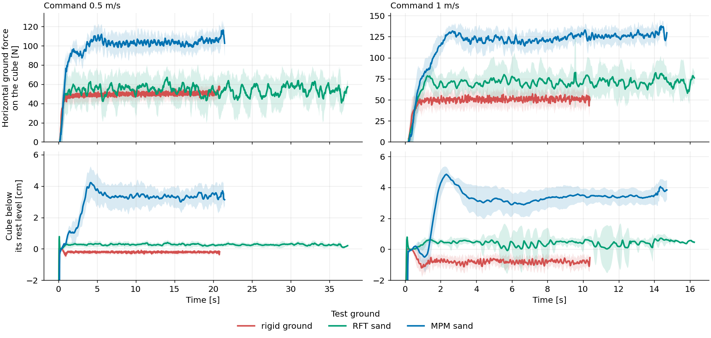
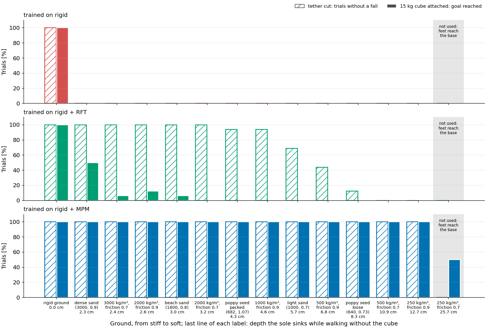

/home/jkamohara/isaac/worktrees/mpm-unification/IsaacLab/logs/t2/tow_rigid_final, /home/jkamohara/isaac/worktrees/mpm-unification/IsaacLab/logs/t2/tow_rft_matched, /home/jkamohara/isaac/worktrees/mpm-unification/IsaacLab/logs/t2/tow_d45.G1 walks forward and tows a 15 kg cube (0.3 m) by a tether tied to its pelvis. Three tow policies, trained with the same cube-mass schedule and lean penalty on three ground models and all evaluated at their final checkpoint, are each tested on rigid ground, on analytical RFT sand and on MPM sand. 16 trials per cell (2 runs of 8 trials, seeds [42, 43]), with a start as in training (random position, heading, velocity, joint angles). A goal is 10 m of robot path (speed summed over time) before the time limit, not net distance; the net distance of the robot and of the cube is given beside every goal count. MPM sand: loose poppy seed on a bed 0.45 m deep, voxel 0.04 m; the MPM-trained policy was trained on a 0.25 m bed. RFT sand as a test ground uses density 640 kg/m³, internal friction 0.73 and surface friction 0.73 (the MPM sand's values, read back from the solver after they were set, for the feet and for the cube). Cube and ground friction 0.5.
g1-tow-rigid-3, W&B aqiwzrv0, checkpoint 39,998 (final), from the rigid walking policy 3qymp37c.g1-tow-soft-contact-2, W&B 9733ux8d, checkpoint 39,998 (final), from the RFT walking policy 6t0h2ud8.g1-tow-mpm-mixed-6, W&B her588wk, checkpoint 39,998 (final), from the MPM walking policy eayrj79r.The same trials with the tether cut. This separates a towing failure from a failure to walk.
| Policy | Tested on | Command | No fall / trials | Time to fall [s] | Robot speed [m/s] |
|---|---|---|---|---|---|
| trained on rigid | rigid ground | 0.5 m/s | 16 / 16 | — | 0.52 ± 0.00 |
| trained on rigid | rigid ground | 1 m/s | 16 / 16 | — | 1.06 ± 0.00 |
| trained on rigid | RFT sand | 0.5 m/s | 0 / 16 | 6.4 ± 4.9 | — |
| trained on rigid | RFT sand | 1 m/s | 0 / 16 | 4.6 ± 4.5 | — |
| trained on rigid | MPM sand | 0.5 m/s | 0 / 16 | 1.1 ± 0.2 | — |
| trained on rigid | MPM sand | 1 m/s | 0 / 16 | 1.0 ± 0.2 | — |
| trained on rigid + RFT | rigid ground | 0.5 m/s | 16 / 16 | — | 0.52 ± 0.00 |
| trained on rigid + RFT | rigid ground | 1 m/s | 16 / 16 | — | 1.06 ± 0.00 |
| trained on rigid + RFT | RFT sand | 0.5 m/s | 16 / 16 | — | 0.64 ± 0.00 |
| trained on rigid + RFT | RFT sand | 1 m/s | 16 / 16 | — | 1.37 ± 0.01 |
| trained on rigid + RFT | MPM sand | 0.5 m/s | 0 / 16 | 1.0 ± 0.2 | — |
| trained on rigid + RFT | MPM sand | 1 m/s | 0 / 16 | 0.9 ± 0.1 | — |
| trained on rigid + MPM | rigid ground | 0.5 m/s | 16 / 16 | — | 0.52 ± 0.00 |
| trained on rigid + MPM | rigid ground | 1 m/s | 16 / 16 | — | 1.14 ± 0.00 |
| trained on rigid + MPM | RFT sand | 0.5 m/s | 16 / 16 | — | 0.96 ± 0.08 |
| trained on rigid + MPM | RFT sand | 1 m/s | 9 / 16 | 7.4 ± 6.8 | 1.33 ± 0.05 |
| trained on rigid + MPM | MPM sand | 0.5 m/s | 16 / 16 | — | 0.57 ± 0.00 |
| trained on rigid + MPM | MPM sand | 1 m/s | 2 / 16 | 3.8 ± 5.3 | — |
Same policy, ground, seeds and start states as the towing trials; the tether force is switched off, the cube stays behind with a mass of 0.1 kg, and each trial runs a fixed 20 s with no goal. No fall: no termination in 20 s. Robot speed: horizontal, world frame, from 5 s on, over the trials that stayed up.
Every trial above starts as in training: the robot is placed at the level the sand is generated at, with a random velocity up to 0.5 m/s and joint angles scaled 0.5 to 1.5, and the sand under it settles and yields. Here the same policies start at rest instead (zero velocity, joint angles scaled 0.9 to 1.1, as the T3 walking evaluation starts its trials), and in a second variant also stand for 2 s with a zero command before the commanded speed. Bed depth 0.45 m, 16 trials per cell (2 runs of 8 trials, seeds [42, 43]), 20 s after the command starts.
| Policy | Start | Tether | Command | No fall / trials | Time to fall [s] | Robot speed [m/s] |
|---|---|---|---|---|---|---|
| trained on rigid | at rest | cut | 0.5 m/s | 0 / 16 | 1.0 ± 0.1 | — |
| trained on rigid | at rest | cut | 1 m/s | 0 / 16 | 1.0 ± 0.1 | — |
| trained on rigid | at rest | 15 kg cube | 0.5 m/s | 0 / 16 | 1.3 ± 0.1 | — |
| trained on rigid | at rest | 15 kg cube | 1 m/s | 0 / 16 | 1.1 ± 0.1 | — |
| trained on rigid | at rest, then 2 s standing | cut | 0.5 m/s | 0 / 16 | 3.0 ± 0.4 | — |
| trained on rigid | at rest, then 2 s standing | cut | 1 m/s | 0 / 16 | 2.8 ± 0.3 | — |
| trained on rigid | at rest, then 2 s standing | 15 kg cube | 0.5 m/s | 0 / 16 | 2.9 ± 0.3 | — |
| trained on rigid | at rest, then 2 s standing | 15 kg cube | 1 m/s | 0 / 16 | 2.9 ± 0.1 | — |
| trained on rigid + RFT | at rest | cut | 0.5 m/s | 0 / 16 | 1.1 ± 0.1 | — |
| trained on rigid + RFT | at rest | cut | 1 m/s | 0 / 16 | 0.9 ± 0.0 | — |
| trained on rigid + RFT | at rest | 15 kg cube | 0.5 m/s | 0 / 16 | 1.5 ± 0.1 | — |
| trained on rigid + RFT | at rest | 15 kg cube | 1 m/s | 0 / 16 | 1.2 ± 0.0 | — |
| trained on rigid + RFT | at rest, then 2 s standing | cut | 0.5 m/s | 0 / 16 | 2.9 ± 0.1 | — |
| trained on rigid + RFT | at rest, then 2 s standing | cut | 1 m/s | 0 / 16 | 2.9 ± 0.1 | — |
| trained on rigid + RFT | at rest, then 2 s standing | 15 kg cube | 0.5 m/s | 0 / 16 | 3.4 ± 0.2 | — |
| trained on rigid + RFT | at rest, then 2 s standing | 15 kg cube | 1 m/s | 0 / 16 | 3.1 ± 0.1 | — |
| trained on rigid + MPM | at rest | cut | 0.5 m/s | 16 / 16 | — | 0.57 ± 0.00 |
| trained on rigid + MPM | at rest | cut | 1 m/s | 0 / 16 | 2.3 ± 1.6 | — |
| trained on rigid + MPM | at rest | 15 kg cube | 0.5 m/s | 16 / 16 | — | 0.48 ± 0.01 |
| trained on rigid + MPM | at rest | 15 kg cube | 1 m/s | 16 / 16 | — | 0.70 ± 0.03 |
| trained on rigid + MPM | at rest, then 2 s standing | cut | 0.5 m/s | 16 / 16 | — | 0.57 ± 0.00 |
| trained on rigid + MPM | at rest, then 2 s standing | cut | 1 m/s | 3 / 16 | 4.2 ± 0.8 | 1.32 ± 0.01 |
| trained on rigid + MPM | at rest, then 2 s standing | 15 kg cube | 0.5 m/s | 16 / 16 | — | 0.47 ± 0.01 |
| trained on rigid + MPM | at rest, then 2 s standing | 15 kg cube | 1 m/s | 16 / 16 | — | 0.68 ± 0.04 |
Time to fall counts from the start of the trial; in the standing variant the command starts at 2 s. Logs: /home/jkamohara/isaac/worktrees/mpm-unification/IsaacLab/logs/t2/tow_start_d45.
/home/jkamohara/isaac/worktrees/mpm-unification/IsaacLab/logs/t2/tow_rigid_final, /home/jkamohara/isaac/worktrees/mpm-unification/IsaacLab/logs/t2/tow_rft_matched, /home/jkamohara/isaac/worktrees/mpm-unification/IsaacLab/logs/t2/tow_d45.| Policy | Tested on | Command | Goal reached / trials | Falls | Time limit | Time to goal [s] | Forward speed error [m/s] | Yaw-rate error [rad/s] | Robot speed [m/s] | Cube speed [m/s] | Robot net distance [m] | Cube net distance [m] | Goals with cube net travel under 8 m | Tether tension [N] | Horizontal tether pull [N] | Cube lower than at rest [cm] | Forward lean [deg] |
|---|---|---|---|---|---|---|---|---|---|---|---|---|---|---|---|---|---|
| trained on rigid | rigid ground | 0.5 m/s, straight | 16 / 16 | 0 | 0 | 21.0 ± 0.3 | 0.029 ± 0.004 | 0.129 ± 0.005 | 0.48 ± 0.01 | 0.48 ± 0.01 | 9.9 ± 0.1 | 9.8 ± 0.1 | 0 of 16 | 60 ± 6 | 51 ± 5 | -0.2 ± 0.0 | 5.3 ± 0.6 |
| trained on rigid | rigid ground | 1 m/s, straight | 16 / 16 | 0 | 0 | 10.4 ± 0.1 | 0.033 ± 0.004 | 0.232 ± 0.015 | 0.98 ± 0.01 | 0.98 ± 0.01 | 9.9 ± 0.1 | 9.8 ± 0.1 | 0 of 16 | 60 ± 6 | 51 ± 6 | -0.8 ± 0.2 | 4.4 ± 1.3 |
| trained on rigid | rigid ground | 0.5 m/s, turning 0.5 rad/s | 16 / 16 | 0 | 0 | 20.3 ± 0.1 | 0.021 ± 0.001 | 0.133 ± 0.002 | 0.50 ± 0.00 | 0.03 ± 0.01 | 1.8 ± 0.1 | 1.4 ± 0.1 | 16 of 16 | 34 ± 2 | 28 ± 2 | -0.0 ± 0.0 | 1.0 ± 0.2 |
| trained on rigid | RFT sand | 0.5 m/s, straight | 0 / 16 | 16 | 0 | — | — | — | — | — | — | — | 0 of 0 | — | — | — | — |
| trained on rigid | RFT sand | 1 m/s, straight | 0 / 16 | 16 | 0 | — | — | — | — | — | — | — | 0 of 0 | — | — | — | — |
| trained on rigid | RFT sand | 0.5 m/s, turning 0.5 rad/s | 4 / 16 | 12 | 0 | 19.9 ± 2.4 | 0.294 ± 0.050 | 0.421 ± 0.035 | 0.56 ± 0.10 | 0.08 ± 0.03 | 1.9 ± 0.7 | 0.5 ± 0.3 | 4 of 4 | 35 ± 5 | 31 ± 4 | 0.2 ± 0.0 | -1.9 ± 3.5 |
| trained on rigid | MPM sand | 0.5 m/s, straight | 0 / 16 | 16 | 0 | — | — | — | — | — | — | — | 0 of 0 | — | — | — | — |
| trained on rigid | MPM sand | 1 m/s, straight | 0 / 16 | 16 | 0 | — | — | — | — | — | — | — | 0 of 0 | — | — | — | — |
| trained on rigid | MPM sand | 0.5 m/s, turning 0.5 rad/s | 0 / 16 | 16 | 0 | — | — | — | — | — | — | — | 0 of 0 | — | — | — | — |
| trained on rigid + RFT | rigid ground | 0.5 m/s, straight | 16 / 16 | 0 | 0 | 21.0 ± 0.2 | 0.026 ± 0.003 | 0.052 ± 0.003 | 0.48 ± 0.00 | 0.48 ± 0.01 | 9.9 ± 0.1 | 9.8 ± 0.1 | 0 of 16 | 60 ± 6 | 50 ± 5 | -0.2 ± 0.0 | 5.7 ± 0.4 |
| trained on rigid + RFT | rigid ground | 1 m/s, straight | 16 / 16 | 0 | 0 | 10.5 ± 0.1 | 0.041 ± 0.006 | 0.100 ± 0.006 | 0.97 ± 0.01 | 0.97 ± 0.01 | 9.9 ± 0.1 | 9.7 ± 0.1 | 0 of 16 | 59 ± 6 | 51 ± 6 | -0.8 ± 0.2 | 6.5 ± 0.7 |
| trained on rigid + RFT | rigid ground | 0.5 m/s, turning 0.5 rad/s | 16 / 16 | 0 | 0 | 20.3 ± 0.1 | 0.015 ± 0.000 | 0.067 ± 0.001 | 0.50 ± 0.00 | 0.02 ± 0.01 | 1.8 ± 0.1 | 1.4 ± 0.1 | 16 of 16 | 31 ± 2 | 26 ± 2 | -0.0 ± 0.0 | 2.3 ± 0.1 |
| trained on rigid + RFT | RFT sand | 0.5 m/s, straight | 16 / 16 | 0 | 0 | 22.4 ± 0.3 | 0.057 ± 0.006 | 0.175 ± 0.005 | 0.45 ± 0.01 | 0.45 ± 0.01 | 9.8 ± 0.1 | 9.6 ± 0.1 | 0 of 16 | 73 ± 0 | 62 ± 0 | 0.4 ± 0.0 | 9.4 ± 0.3 |
| trained on rigid + RFT | RFT sand | 1 m/s, straight | 16 / 16 | 0 | 0 | 10.7 ± 0.1 | 0.073 ± 0.008 | 0.217 ± 0.015 | 0.97 ± 0.01 | 0.97 ± 0.01 | 9.9 ± 0.1 | 9.7 ± 0.1 | 0 of 16 | 73 ± 0 | 63 ± 0 | 0.4 ± 0.0 | 14.5 ± 0.5 |
| trained on rigid + RFT | RFT sand | 0.5 m/s, turning 0.5 rad/s | 16 / 16 | 0 | 0 | 19.3 ± 0.2 | 0.063 ± 0.004 | 0.187 ± 0.011 | 0.55 ± 0.00 | 0.03 ± 0.00 | 1.8 ± 0.1 | 1.0 ± 0.1 | 16 of 16 | 45 ± 2 | 38 ± 2 | 0.1 ± 0.0 | 2.2 ± 0.4 |
| trained on rigid + RFT | MPM sand | 0.5 m/s, straight | 0 / 16 | 16 | 0 | — | — | — | — | — | — | — | 0 of 0 | — | — | — | — |
| trained on rigid + RFT | MPM sand | 1 m/s, straight | 0 / 16 | 16 | 0 | — | — | — | — | — | — | — | 0 of 0 | — | — | — | — |
| trained on rigid + RFT | MPM sand | 0.5 m/s, turning 0.5 rad/s | 0 / 16 | 16 | 0 | — | — | — | — | — | — | — | 0 of 0 | — | — | — | — |
| trained on rigid + MPM | rigid ground | 0.5 m/s, straight | 16 / 16 | 0 | 0 | 20.7 ± 0.2 | 0.026 ± 0.001 | 0.071 ± 0.002 | 0.48 ± 0.00 | 0.49 ± 0.00 | 9.9 ± 0.1 | 9.8 ± 0.1 | 0 of 16 | 60 ± 6 | 50 ± 5 | -0.2 ± 0.0 | 8.4 ± 0.6 |
| trained on rigid + MPM | rigid ground | 1 m/s, straight | 16 / 16 | 0 | 0 | 10.3 ± 0.1 | 0.033 ± 0.002 | 0.091 ± 0.006 | 0.99 ± 0.01 | 0.99 ± 0.01 | 9.9 ± 0.1 | 9.8 ± 0.1 | 0 of 16 | 59 ± 6 | 51 ± 5 | -0.8 ± 0.1 | 7.7 ± 1.1 |
| trained on rigid + MPM | rigid ground | 0.5 m/s, turning 0.5 rad/s | 16 / 16 | 0 | 0 | 20.3 ± 0.1 | 0.019 ± 0.000 | 0.091 ± 0.001 | 0.50 ± 0.00 | 0.02 ± 0.00 | 1.7 ± 0.1 | 1.4 ± 0.1 | 16 of 16 | 22 ± 2 | 19 ± 2 | -0.0 ± 0.0 | 4.1 ± 0.2 |
| trained on rigid + MPM | RFT sand | 0.5 m/s, straight | 16 / 16 | 0 | 0 | 35.9 ± 2.1 | 0.340 ± 0.017 | 0.268 ± 0.017 | 0.28 ± 0.02 | 0.18 ± 0.02 | 6.3 ± 0.5 | 6.0 ± 0.5 | 16 of 16 | 62 ± 3 | 54 ± 2 | 0.3 ± 0.0 | 4.0 ± 1.0 |
| trained on rigid + MPM | RFT sand | 1 m/s, straight | 14 / 16 | 2 | 0 | 15.4 ± 1.3 | 0.419 ± 0.057 | 0.336 ± 0.032 | 0.66 ± 0.05 | 0.62 ± 0.07 | 9.2 ± 0.4 | 8.9 ± 0.3 | 0 of 14 | 80 ± 2 | 70 ± 2 | 0.4 ± 0.3 | 9.7 ± 2.4 |
| trained on rigid + MPM | RFT sand | 0.5 m/s, turning 0.5 rad/s | 13 / 16 | 3 | 0 | 20.5 ± 0.8 | 0.210 ± 0.025 | 0.307 ± 0.032 | 0.53 ± 0.03 | 0.03 ± 0.00 | 1.6 ± 0.4 | 0.3 ± 0.1 | 13 of 13 | 27 ± 4 | 23 ± 3 | 0.1 ± 0.0 | 4.5 ± 1.6 |
| trained on rigid + MPM | MPM sand | 0.5 m/s, straight | 16 / 16 | 0 | 0 | 21.0 ± 0.5 | 0.080 ± 0.007 | 0.208 ± 0.018 | 0.48 ± 0.01 | 0.47 ± 0.01 | 9.7 ± 0.1 | 9.5 ± 0.1 | 0 of 16 | 115 ± 4 | 103 ± 4 | 3.3 ± 0.3 | 18.7 ± 0.6 |
| trained on rigid + MPM | MPM sand | 1 m/s, straight | 16 / 16 | 0 | 0 | 14.2 ± 0.5 | 0.358 ± 0.028 | 0.291 ± 0.014 | 0.69 ± 0.03 | 0.67 ± 0.03 | 9.7 ± 0.1 | 9.3 ± 0.1 | 0 of 16 | 135 ± 3 | 124 ± 3 | 3.3 ± 0.4 | 20.0 ± 0.3 |
| trained on rigid + MPM | MPM sand | 0.5 m/s, turning 0.5 rad/s | 16 / 16 | 0 | 0 | 20.3 ± 0.1 | 0.044 ± 0.005 | 0.160 ± 0.005 | 0.51 ± 0.00 | 0.01 ± 0.00 | 1.5 ± 0.1 | 1.0 ± 0.2 | 16 of 16 | 20 ± 2 | 17 ± 2 | 5.2 ± 0.5 | 4.3 ± 0.4 |
Goal: the robot's path (its horizontal speed summed over time) reaches 10 m before the time limit (40 s at 0.5 m/s, 20 s at 1 m/s); it is a path length, not a distance from the start. Fall: any termination, which is a pelvis tilt above 45° or the pelvis-height term. Time limit: trials that neither fell nor reached the goal. Time to goal: mean ± std over the trials that reached it. The remaining columns are mean ± std over the trials without a fall, each averaged from 5 s to its end (after the start-up of the tow), and empty when fewer than three trials stayed up. Forward speed error: mean absolute difference between the base-frame forward velocity and the command; the base frame leans with the pelvis, so the robot speed (horizontal, world frame) is given beside it. Yaw-rate error: mean absolute difference between the instantaneous base yaw rate and the command; it includes the yaw oscillation of each step. Tether tension and horizontal tether pull are the magnitude and the horizontal part of the same logged tether force; averaged over a trial the horizontal force of the ground on the cube equals the pull, so these are one measurement, not two. The cube speed is given because the cube does not move at the commanded speed on every ground. Net distance: horizontal distance between the start and the end of the trial, for the robot and for the cube, over the trials without a fall; because the goal counts path, a robot can reach it while the cube has moved little, so the goals with a net cube travel under 8 m are counted beside it (threshold fixed before computing). Cube lower than at rest: height of the cube while it rests before the tether goes taut (0.2 to 2 s, tension below 5 N, speed below 0.02 m/s) minus its height while towed, per trial; it needs no surface level. With the turning command the robot walks a circle of 1 m radius, shorter than the 1.2 m tether, so the cube stays near the centre and pivots: those rows test turning while tied to the cube, not dragging it along a curve.
The same policy (trained on rigid + MPM) tows the same cube on the three ground models. The force profiles of all three policies on all three grounds are in the figure by tow policy, drawn by the T3 session.

/home/jkamohara/isaac/worktrees/mpm-unification/IsaacLab/logs/t2/tow_rigid_final, /home/jkamohara/isaac/worktrees/mpm-unification/IsaacLab/logs/t2/tow_rft_matched, /home/jkamohara/isaac/worktrees/mpm-unification/IsaacLab/logs/t2/tow_d45.The three final tow policies on rigid ground and on 13 MPM sands: friction 0.7 and 0.9 at densities from 250 to 3,000 kg/m³, plus beach sand and packed and loose poppy seed. Command 0.5 m/s straight, 15 kg cube attached (goal 10 m of path, limit 40 s) and tether cut (20 s), 16 trials per cell (2 runs of 8, seeds 42 and 43), start as in training. Bed 0.6 m deep, voxel 0.04 m, all particles awake, sand template settled for 12 s; each sand is settled as itself and every trial starts on its settled surface (pelvis 0.76 m above it). Design fixed before running: outputs/T2.md, block T2-SANDS. OSMO t2-tow-sands-1 on NVIDIA L40; IsaacLab 0007b2e67 with 76 uncommitted entries, Newton 48231a989 clean. Rigid ground is from the earlier runs. Unchecked.

/home/jkamohara/isaac/worktrees/mpm-unification/IsaacLab/logs/t2/tow_sands.
/home/jkamohara/isaac/worktrees/mpm-unification/IsaacLab/logs/t2/tow_sands.| Ground | rigid-trained: up, tether cut | rigid-trained: goals, cube | RFT-trained: up, tether cut | RFT-trained: goals, cube | MPM-trained: up, tether cut | MPM-trained: goals, cube |
|---|---|---|---|---|---|---|
| rigid ground | 16 / 16 | 16 / 16 | 16 / 16 | 16 / 16 | 16 / 16 | 16 / 16 |
| dense sand (3000, 0.9) | 0 / 16 | 0 / 16 | 16 / 16 | 8 / 16 | 16 / 16 | 16 / 16 |
| 3000 kg/m³, friction 0.7 | 0 / 16 | 0 / 16 | 16 / 16 | 1 / 16 | 16 / 16 | 16 / 16 |
| 2000 kg/m³, friction 0.9 | 0 / 16 | 0 / 16 | 16 / 16 | 2 / 16 | 16 / 16 | 16 / 16 |
| 2000 kg/m³, friction 0.7 | 0 / 16 | 0 / 16 | 16 / 16 | 0 / 16 | 16 / 16 | 16 / 16 |
| beach sand (1800, 0.8) | 0 / 16 | 0 / 16 | 16 / 16 | 1 / 16 | 16 / 16 | 16 / 16 |
| 1000 kg/m³, friction 0.9 | 0 / 16 | 0 / 16 | 15 / 16 | 0 / 16 | 16 / 16 | 16 / 16 |
| light sand (1000, 0.7) | 0 / 16 | 0 / 16 | 11 / 16 | 0 / 16 | 16 / 16 | 16 / 16 |
| poppy seed packed (682, 1.07) | 0 / 16 | 0 / 16 | 15 / 16 | 0 / 16 | 16 / 16 | 16 / 16 |
| poppy seed loose (640, 0.73) | 0 / 16 | 0 / 16 | 2 / 16 | 0 / 16 | 16 / 16 | 16 / 16 |
| 500 kg/m³, friction 0.9 | 0 / 16 | 0 / 16 | 7 / 16 | 0 / 16 | 16 / 16 | 16 / 16 |
| 500 kg/m³, friction 0.7 | 0 / 16 | 0 / 16 | 0 / 16 | 0 / 16 | 16 / 16 | 16 / 16 |
| 250 kg/m³, friction 0.9 | 0 / 16 | 0 / 16 | 0 / 16 | 0 / 16 | 16 / 16 | 16 / 16 |
| 250 kg/m³, friction 0.7 | 0 / 16 | 0 / 16 | 0 / 16 | 0 / 16 | 0 / 16 | 8 / 16 |
| Policy | Ground | Goals | Up | Robot net distance [m] | Cube net distance [m] | Goals with cube net travel under 8 m | Cube speed [m/s] | Tether tension [N] | Horizontal pull [N] | Cube below settled surface [cm] | Cube lower than at rest [cm] | Torso pitch [deg] | Pelvis ahead of stance foot [cm] | vx error [m/s] | Settled surface below generated level [cm] | Lowest sole corner above base [cm] | Trials with a foot within 2 cm of base | Lowest cube corner above base [cm] |
|---|---|---|---|---|---|---|---|---|---|---|---|---|---|---|---|---|---|---|
| trained on rigid | rigid ground | 16 / 16 | 16 / 16 | 9.9 ± 0.1 | 9.8 ± 0.1 | 0 of 16 | 0.48 ± 0.01 | 60 ± 6 | 51 ± 5 | — | -0.2 ± 0.0 | 6.9 ± 0.4 | 14.3 ± 0.6 | 0.029 ± 0.004 | — | — | — | — |
| trained on rigid | dense sand (3000, 0.9) | 0 / 16 | 0 / 16 | — | — | 0 of 0 | — | — | — | — | — | — | — | — | 12.1 | 39.6 | 0 / 16 | 46.8 |
| trained on rigid | 3000 kg/m³, friction 0.7 | 0 / 16 | 0 / 16 | — | — | 0 of 0 | — | — | — | — | — | — | — | — | 17.3 | 32.0 | 0 / 16 | 41.7 |
| trained on rigid | 2000 kg/m³, friction 0.9 | 0 / 16 | 0 / 16 | — | — | 0 of 0 | — | — | — | — | — | — | — | — | 12.6 | 36.5 | 0 / 16 | 46.1 |
| trained on rigid | 2000 kg/m³, friction 0.7 | 0 / 16 | 0 / 16 | — | — | 0 of 0 | — | — | — | — | — | — | — | — | 17.6 | 29.5 | 0 / 16 | 41.3 |
| trained on rigid | beach sand (1800, 0.8) | 0 / 16 | 0 / 16 | — | — | 0 of 0 | — | — | — | — | — | — | — | — | 14.7 | 33.0 | 0 / 16 | 44.0 |
| trained on rigid | 1000 kg/m³, friction 0.9 | 0 / 16 | 0 / 16 | — | — | 0 of 0 | — | — | — | — | — | — | — | — | 11.7 | 31.7 | 0 / 16 | 47.0 |
| trained on rigid | light sand (1000, 0.7) | 0 / 16 | 0 / 16 | — | — | 0 of 0 | — | — | — | — | — | — | — | — | 17.2 | 23.0 | 0 / 16 | 41.0 |
| trained on rigid | poppy seed packed (682, 1.07) | 0 / 16 | 0 / 16 | — | — | 0 of 0 | — | — | — | — | — | — | — | — | 9.8 | 34.4 | 0 / 16 | 48.4 |
| trained on rigid | poppy seed loose (640, 0.73) | 0 / 16 | 0 / 16 | — | — | 0 of 0 | — | — | — | — | — | — | — | — | 16.4 | 16.9 | 0 / 16 | 41.8 |
| trained on rigid | 500 kg/m³, friction 0.9 | 0 / 16 | 0 / 16 | — | — | 0 of 0 | — | — | — | — | — | — | — | — | 12.4 | 21.6 | 0 / 16 | 45.7 |
| trained on rigid | 500 kg/m³, friction 0.7 | 0 / 16 | 0 / 16 | — | — | 0 of 0 | — | — | — | — | — | — | — | — | 17.1 | 12.9 | 0 / 15 | 40.2 |
| trained on rigid | 250 kg/m³, friction 0.9 | 0 / 16 | 0 / 16 | — | — | 0 of 0 | — | — | — | — | — | — | — | — | 12.1 | 5.1 | 0 / 15 | 43.9 |
| trained on rigid | 250 kg/m³, friction 0.7 | 0 / 16 | 0 / 16 | — | — | 0 of 0 | — | — | — | — | — | — | — | — | 16.8 | 0.8 | 8 / 12 | 38.5 |
| trained on rigid + RFT | rigid ground | 16 / 16 | 16 / 16 | 9.9 ± 0.1 | 9.8 ± 0.1 | 0 of 16 | 0.48 ± 0.01 | 60 ± 6 | 50 ± 5 | — | -0.2 ± 0.0 | 5.8 ± 0.3 | 12.4 ± 0.5 | 0.026 ± 0.003 | — | — | — | — |
| trained on rigid + RFT | dense sand (3000, 0.9) | 8 / 16 | 8 / 16 | 9.8 ± 0.1 | 9.6 ± 0.1 | 0 of 8 | 0.77 ± 0.02 | 83 ± 1 | 70 ± 1 | -0.3 ± 0.3 | 0.8 ± 0.1 | 30.6 ± 0.4 | 22.9 ± 0.4 | 0.172 ± 0.010 | 12.3 | 35.6 | 0 / 16 | 43.2 |
| trained on rigid + RFT | 3000 kg/m³, friction 0.7 | 1 / 16 | 1 / 16 | — | — | 0 of 1 | — | — | — | — | — | — | — | — | 17.4 | 32.3 | 0 / 16 | 39.8 |
| trained on rigid + RFT | 2000 kg/m³, friction 0.9 | 2 / 16 | 2 / 16 | — | — | 0 of 2 | — | — | — | — | — | — | — | — | 12.6 | 34.7 | 0 / 16 | 42.6 |
| trained on rigid + RFT | 2000 kg/m³, friction 0.7 | 0 / 16 | 0 / 16 | — | — | 0 of 0 | — | — | — | — | — | — | — | — | 17.7 | 26.0 | 0 / 16 | 38.6 |
| trained on rigid + RFT | beach sand (1800, 0.8) | 1 / 16 | 1 / 16 | — | — | 0 of 1 | — | — | — | — | — | — | — | — | 14.7 | 34.0 | 0 / 16 | 40.5 |
| trained on rigid + RFT | 1000 kg/m³, friction 0.9 | 0 / 16 | 0 / 16 | — | — | 0 of 0 | — | — | — | — | — | — | — | — | 11.6 | 34.9 | 0 / 16 | 43.1 |
| trained on rigid + RFT | light sand (1000, 0.7) | 0 / 16 | 0 / 16 | — | — | 0 of 0 | — | — | — | — | — | — | — | — | 17.2 | 24.4 | 0 / 16 | 37.1 |
| trained on rigid + RFT | poppy seed packed (682, 1.07) | 0 / 16 | 0 / 16 | — | — | 0 of 0 | — | — | — | — | — | — | — | — | 9.8 | 36.6 | 0 / 16 | 44.3 |
| trained on rigid + RFT | poppy seed loose (640, 0.73) | 0 / 16 | 0 / 16 | — | — | 0 of 0 | — | — | — | — | — | — | — | — | 16.4 | 22.2 | 0 / 16 | 40.1 |
| trained on rigid + RFT | 500 kg/m³, friction 0.9 | 0 / 16 | 0 / 16 | — | — | 0 of 0 | — | — | — | — | — | — | — | — | 12.3 | 28.2 | 0 / 16 | 40.0 |
| trained on rigid + RFT | 500 kg/m³, friction 0.7 | 0 / 16 | 0 / 16 | — | — | 0 of 0 | — | — | — | — | — | — | — | — | 17.0 | 13.9 | 0 / 16 | 40.6 |
| trained on rigid + RFT | 250 kg/m³, friction 0.9 | 0 / 16 | 0 / 16 | — | — | 0 of 0 | — | — | — | — | — | — | — | — | 12.0 | 16.3 | 0 / 16 | 43.7 |
| trained on rigid + RFT | 250 kg/m³, friction 0.7 | 0 / 16 | 0 / 16 | — | — | 0 of 0 | — | — | — | — | — | — | — | — | 16.9 | 1.6 | 1 / 14 | 38.6 |
| trained on rigid + MPM | rigid ground | 16 / 16 | 16 / 16 | 9.9 ± 0.1 | 9.8 ± 0.1 | 0 of 16 | 0.49 ± 0.00 | 60 ± 6 | 50 ± 5 | — | -0.2 ± 0.0 | 8.5 ± 0.5 | 14.0 ± 0.5 | 0.026 ± 0.001 | — | — | — | — |
| trained on rigid + MPM | dense sand (3000, 0.9) | 16 / 16 | 16 / 16 | 9.5 ± 0.2 | 9.3 ± 0.2 | 0 of 16 | 0.51 ± 0.01 | 83 ± 1 | 69 ± 1 | 0.1 ± 0.2 | 1.2 ± 0.1 | 14.8 ± 0.6 | 20.4 ± 0.4 | 0.091 ± 0.014 | 12.1 | 39.8 | 0 / 16 | 44.3 |
| trained on rigid + MPM | 3000 kg/m³, friction 0.7 | 16 / 16 | 16 / 16 | 9.3 ± 0.1 | 9.1 ± 0.1 | 0 of 16 | 0.48 ± 0.01 | 90 ± 3 | 77 ± 2 | -0.0 ± 0.2 | 1.1 ± 0.2 | 15.6 ± 0.5 | 21.5 ± 0.4 | 0.111 ± 0.015 | 17.4 | 32.0 | 0 / 16 | 39.3 |
| trained on rigid + MPM | 2000 kg/m³, friction 0.9 | 16 / 16 | 16 / 16 | 9.5 ± 0.2 | 9.3 ± 0.2 | 0 of 16 | 0.51 ± 0.01 | 85 ± 2 | 72 ± 2 | -0.0 ± 0.2 | 1.0 ± 0.2 | 15.7 ± 0.7 | 20.8 ± 0.3 | 0.095 ± 0.012 | 12.6 | 37.1 | 0 / 16 | 43.6 |
| trained on rigid + MPM | 2000 kg/m³, friction 0.7 | 16 / 16 | 16 / 16 | 9.5 ± 0.1 | 9.3 ± 0.1 | 0 of 16 | 0.49 ± 0.01 | 92 ± 2 | 79 ± 2 | 0.3 ± 0.2 | 1.3 ± 0.2 | 16.5 ± 0.6 | 21.8 ± 0.3 | 0.096 ± 0.013 | 17.7 | 29.8 | 0 / 16 | 38.2 |
| trained on rigid + MPM | beach sand (1800, 0.8) | 16 / 16 | 16 / 16 | 9.5 ± 0.2 | 9.3 ± 0.2 | 0 of 16 | 0.51 ± 0.01 | 88 ± 1 | 75 ± 1 | 0.2 ± 0.1 | 1.2 ± 0.1 | 16.4 ± 0.6 | 21.1 ± 0.3 | 0.094 ± 0.012 | 14.7 | 34.1 | 0 / 16 | 41.0 |
| trained on rigid + MPM | 1000 kg/m³, friction 0.9 | 16 / 16 | 16 / 16 | 9.5 ± 0.1 | 9.3 ± 0.2 | 0 of 16 | 0.51 ± 0.02 | 91 ± 2 | 78 ± 2 | 1.1 ± 0.4 | 1.7 ± 0.3 | 17.8 ± 0.4 | 21.5 ± 0.3 | 0.093 ± 0.010 | 11.7 | 33.3 | 0 / 16 | 42.5 |
| trained on rigid + MPM | light sand (1000, 0.7) | 16 / 16 | 16 / 16 | 9.7 ± 0.1 | 9.5 ± 0.1 | 0 of 16 | 0.52 ± 0.01 | 95 ± 1 | 83 ± 1 | 0.8 ± 0.2 | 1.6 ± 0.1 | 18.0 ± 0.5 | 23.0 ± 0.3 | 0.067 ± 0.007 | 17.3 | 24.9 | 0 / 16 | 36.9 |
| trained on rigid + MPM | poppy seed packed (682, 1.07) | 16 / 16 | 16 / 16 | 9.5 ± 0.2 | 9.3 ± 0.2 | 0 of 16 | 0.51 ± 0.02 | 91 ± 2 | 78 ± 2 | 0.8 ± 0.3 | 1.7 ± 0.2 | 17.8 ± 0.5 | 21.5 ± 0.4 | 0.094 ± 0.012 | 9.8 | 35.0 | 0 / 16 | 43.0 |
| trained on rigid + MPM | poppy seed loose (640, 0.73) | 16 / 16 | 16 / 16 | 9.7 ± 0.1 | 9.5 ± 0.1 | 0 of 16 | 0.50 ± 0.01 | 106 ± 1 | 94 ± 1 | 2.1 ± 0.2 | 2.5 ± 0.2 | 18.7 ± 0.4 | 25.6 ± 0.3 | 0.067 ± 0.003 | 16.5 | 21.5 | 0 / 16 | 36.0 |
| trained on rigid + MPM | 500 kg/m³, friction 0.9 | 16 / 16 | 16 / 16 | 9.7 ± 0.1 | 9.4 ± 0.1 | 0 of 16 | 0.52 ± 0.01 | 96 ± 2 | 83 ± 1 | 1.9 ± 0.3 | 2.2 ± 0.2 | 20.1 ± 0.5 | 22.8 ± 0.4 | 0.081 ± 0.006 | 12.3 | 27.4 | 0 / 16 | 39.5 |
| trained on rigid + MPM | 500 kg/m³, friction 0.7 | 16 / 16 | 16 / 16 | 9.7 ± 0.1 | 9.4 ± 0.1 | 0 of 16 | 0.44 ± 0.03 | 126 ± 8 | 114 ± 8 | 4.1 ± 0.6 | 4.3 ± 0.6 | 17.4 ± 1.2 | 29.2 ± 1.4 | 0.094 ± 0.014 | 17.0 | 16.0 | 0 / 16 | 32.0 |
| trained on rigid + MPM | 250 kg/m³, friction 0.9 | 16 / 16 | 16 / 16 | 8.8 ± 1.2 | 8.4 ± 1.2 | 5 of 16 | 0.36 ± 0.10 | 140 ± 8 | 129 ± 8 | 6.8 ± 1.5 | 6.4 ± 1.6 | 18.6 ± 0.5 | 30.7 ± 0.8 | 0.167 ± 0.087 | 12.1 | 9.1 | 0 / 16 | 25.3 |
| trained on rigid + MPM | 250 kg/m³, friction 0.7 | 8 / 16 | 8 / 16 | 4.1 ± 0.9 | 4.0 ± 0.8 | 8 of 8 | 0.14 ± 0.04 | 158 ± 6 | 150 ± 5 | 12.0 ± 1.6 | 11.4 ± 1.3 | 25.8 ± 3.2 | 30.6 ± 2.8 | 0.371 ± 0.032 | 16.8 | 1.0 | 16 / 16 | 18.4 |
Goal cells with a net cube travel under 8 m (the goal counts 10 m of robot path, not distance): trained on rigid + MPM on 250 kg/m³, friction 0.9: 5 of 16 goals, cube net travel 8.4 ± 1.2 m in the goal trials; trained on rigid + MPM on 250 kg/m³, friction 0.7: 8 of 8 goals, cube net travel 4.0 ± 0.8 m in the goal trials.
Grounds not used because a foot comes within 2 cm of the rigid base while towing: 250 kg/m³, friction 0.7.
A policy walks without load on a ground when at least 14 of 16 trials stay up with the tether cut; it fails with the cube when fewer than 14 of 16 trials reach the goal.
| Policy | Ground | Up, tether cut | Robot speed, tether cut [m/s] | Goals, cube | Falls, cube | Time limit, cube | Time to fall, cube [s] |
|---|---|---|---|---|---|---|---|
| trained on rigid | rigid ground | 16 / 16 | 0.52 ± 0.00 | 16 / 16 | 0 | 0 | — |
| trained on rigid + RFT | rigid ground | 16 / 16 | 0.52 ± 0.00 | 16 / 16 | 0 | 0 | — |
| trained on rigid + RFT | dense sand (3000, 0.9) | 16 / 16 | 0.63 ± 0.02 | 8 / 16 | 8 | 0 | 7.2 ± 3.8 |
| trained on rigid + RFT | 3000 kg/m³, friction 0.7 | 16 / 16 | 0.65 ± 0.01 | 1 / 16 | 15 | 0 | 3.9 ± 1.8 |
| trained on rigid + RFT | 2000 kg/m³, friction 0.9 | 16 / 16 | 0.67 ± 0.02 | 2 / 16 | 14 | 0 | 4.9 ± 2.5 |
| trained on rigid + RFT | 2000 kg/m³, friction 0.7 | 16 / 16 | 0.68 ± 0.01 | 0 / 16 | 16 | 0 | 2.9 ± 0.8 |
| trained on rigid + RFT | beach sand (1800, 0.8) | 16 / 16 | 0.68 ± 0.01 | 1 / 16 | 15 | 0 | 3.1 ± 0.8 |
| trained on rigid + RFT | 1000 kg/m³, friction 0.9 | 15 / 16 | 0.70 ± 0.01 | 0 / 16 | 16 | 0 | 2.5 ± 1.0 |
| trained on rigid + RFT | poppy seed packed (682, 1.07) | 15 / 16 | 0.71 ± 0.01 | 0 / 16 | 16 | 0 | 3.1 ± 1.8 |
| trained on rigid + MPM | rigid ground | 16 / 16 | 0.52 ± 0.00 | 16 / 16 | 0 | 0 | — |
| trained on rigid + MPM | dense sand (3000, 0.9) | 16 / 16 | 0.55 ± 0.00 | 16 / 16 | 0 | 0 | — |
| trained on rigid + MPM | 3000 kg/m³, friction 0.7 | 16 / 16 | 0.55 ± 0.00 | 16 / 16 | 0 | 0 | — |
| trained on rigid + MPM | 2000 kg/m³, friction 0.9 | 16 / 16 | 0.56 ± 0.00 | 16 / 16 | 0 | 0 | — |
| trained on rigid + MPM | 2000 kg/m³, friction 0.7 | 16 / 16 | 0.56 ± 0.00 | 16 / 16 | 0 | 0 | — |
| trained on rigid + MPM | beach sand (1800, 0.8) | 16 / 16 | 0.56 ± 0.00 | 16 / 16 | 0 | 0 | — |
| trained on rigid + MPM | 1000 kg/m³, friction 0.9 | 16 / 16 | 0.56 ± 0.00 | 16 / 16 | 0 | 0 | — |
| trained on rigid + MPM | light sand (1000, 0.7) | 16 / 16 | 0.56 ± 0.00 | 16 / 16 | 0 | 0 | — |
| trained on rigid + MPM | poppy seed packed (682, 1.07) | 16 / 16 | 0.56 ± 0.00 | 16 / 16 | 0 | 0 | — |
| trained on rigid + MPM | poppy seed loose (640, 0.73) | 16 / 16 | 0.56 ± 0.00 | 16 / 16 | 0 | 0 | — |
| trained on rigid + MPM | 500 kg/m³, friction 0.9 | 16 / 16 | 0.56 ± 0.00 | 16 / 16 | 0 | 0 | — |
| trained on rigid + MPM | 500 kg/m³, friction 0.7 | 16 / 16 | 0.56 ± 0.00 | 16 / 16 | 0 | 0 | — |
| trained on rigid + MPM | 250 kg/m³, friction 0.9 | 16 / 16 | 0.57 ± 0.00 | 16 / 16 | 0 | 0 | — |
| Sand | Policy | Setting | Up, tether cut | Goals, cube | Cube speed [m/s] | Tether tension [N] | Torso pitch [deg] | Settled surface below generated level [cm] |
|---|---|---|---|---|---|---|---|---|
| beach sand (1800, 0.8) | trained on rigid | awake | 0 / 16 | 0 / 16 | — | — | — | 14.7 |
| beach sand (1800, 0.8) | trained on rigid + RFT | awake | 16 / 16 | 1 / 16 | — | — | — | 14.7 |
| beach sand (1800, 0.8) | trained on rigid + MPM | awake | 16 / 16 | 16 / 16 | 0.51 ± 0.01 | 88 ± 1 | 16.4 ± 0.6 | 14.7 |
| beach sand (1800, 0.8) | trained on rigid | sleep | 0 / 16 | 0 / 16 | — | — | — | 11.1 |
| beach sand (1800, 0.8) | trained on rigid + RFT | sleep | 16 / 16 | 0 / 16 | — | — | — | 10.8 |
| beach sand (1800, 0.8) | trained on rigid + MPM | sleep | 16 / 16 | 16 / 16 | 0.50 ± 0.02 | 93 ± 3 | 17.9 ± 0.6 | 11.0 |
| dense sand (3000, 0.9) | trained on rigid | awake | 0 / 16 | 0 / 16 | — | — | — | 12.1 |
| dense sand (3000, 0.9) | trained on rigid + RFT | awake | 16 / 16 | 8 / 16 | 0.77 ± 0.02 | 83 ± 1 | 30.6 ± 0.4 | 12.3 |
| dense sand (3000, 0.9) | trained on rigid + MPM | awake | 16 / 16 | 16 / 16 | 0.51 ± 0.01 | 83 ± 1 | 14.8 ± 0.6 | 12.1 |
| dense sand (3000, 0.9) | trained on rigid | sleep12 | 0 / 16 | 0 / 16 | — | — | — | 11.5 |
| dense sand (3000, 0.9) | trained on rigid + RFT | sleep12 | 16 / 16 | 5 / 16 | 0.76 ± 0.02 | 88 ± 1 | 30.9 ± 0.8 | 11.9 |
| dense sand (3000, 0.9) | trained on rigid + MPM | sleep12 | 16 / 16 | 16 / 16 | 0.51 ± 0.01 | 81 ± 1 | 14.9 ± 0.7 | 11.6 |
| light sand (1000, 0.7) | trained on rigid | awake | 0 / 16 | 0 / 16 | — | — | — | 17.2 |
| light sand (1000, 0.7) | trained on rigid + RFT | awake | 11 / 16 | 0 / 16 | — | — | — | 17.2 |
| light sand (1000, 0.7) | trained on rigid + MPM | awake | 16 / 16 | 16 / 16 | 0.52 ± 0.01 | 95 ± 1 | 18.0 ± 0.5 | 17.3 |
| light sand (1000, 0.7) | trained on rigid | sleep12 | 0 / 16 | 0 / 16 | — | — | — | 17.1 |
| light sand (1000, 0.7) | trained on rigid + RFT | sleep12 | 5 / 16 | 0 / 16 | — | — | — | 17.0 |
| light sand (1000, 0.7) | trained on rigid + MPM | sleep12 | 16 / 16 | 16 / 16 | 0.51 ± 0.01 | 97 ± 2 | 18.7 ± 0.6 | 17.0 |
| poppy seed loose (640, 0.73) | trained on rigid | awake | 0 / 16 | 0 / 16 | — | — | — | 16.4 |
| poppy seed loose (640, 0.73) | trained on rigid + RFT | awake | 2 / 16 | 0 / 16 | — | — | — | 16.4 |
| poppy seed loose (640, 0.73) | trained on rigid + MPM | awake | 16 / 16 | 16 / 16 | 0.50 ± 0.01 | 106 ± 1 | 18.7 ± 0.4 | 16.5 |
| poppy seed loose (640, 0.73) | trained on rigid | sleep12 | 0 / 16 | 0 / 16 | — | — | — | 16.3 |
| poppy seed loose (640, 0.73) | trained on rigid + RFT | sleep12 | 2 / 16 | 0 / 16 | — | — | — | 16.0 |
| poppy seed loose (640, 0.73) | trained on rigid + MPM | sleep12 | 16 / 16 | 16 / 16 | 0.49 ± 0.01 | 112 ± 1 | 18.0 ± 0.4 | 16.3 |
| poppy seed packed (682, 1.07) | trained on rigid | awake | 0 / 16 | 0 / 16 | — | — | — | 9.8 |
| poppy seed packed (682, 1.07) | trained on rigid + RFT | awake | 15 / 16 | 0 / 16 | — | — | — | 9.8 |
| poppy seed packed (682, 1.07) | trained on rigid + MPM | awake | 16 / 16 | 16 / 16 | 0.51 ± 0.02 | 91 ± 2 | 17.8 ± 0.5 | 9.8 |
| poppy seed packed (682, 1.07) | trained on rigid | sleep | 0 / 16 | 0 / 16 | — | — | — | 7.7 |
| poppy seed packed (682, 1.07) | trained on rigid + RFT | sleep | 13 / 16 | 0 / 16 | — | — | — | 7.7 |
| poppy seed packed (682, 1.07) | trained on rigid + MPM | sleep | 16 / 16 | 16 / 16 | 0.53 ± 0.01 | 92 ± 1 | 19.0 ± 0.5 | 7.8 |
| Ground | Sole sinkage of the MPM-trained robot, tether cut [cm] | In the figure |
|---|---|---|
| rigid ground | 0.0 | yes |
| dense sand (3000, 0.9) | 2.3 | yes |
| 3000 kg/m³, friction 0.7 | 2.4 | yes |
| 2000 kg/m³, friction 0.9 | 2.6 | yes |
| beach sand (1800, 0.8) | 3.0 | yes |
| 2000 kg/m³, friction 0.7 | 3.2 | yes |
| poppy seed packed (682, 1.07) | 4.3 | yes |
| 1000 kg/m³, friction 0.9 | 4.6 | yes |
| light sand (1000, 0.7) | 5.7 | yes |
| 500 kg/m³, friction 0.9 | 6.8 | yes |
| poppy seed loose (640, 0.73) | 8.3 | yes |
| 500 kg/m³, friction 0.7 | 10.9 | yes |
| 250 kg/m³, friction 0.9 | 12.7 | yes |
| 250 kg/m³, friction 0.7 | 25.7 | no: feet reach the base |
Does the RFT-trained policy's outcome follow the tether tension or the ground? The same 0.3 m cube with other masses, RFT-trained and MPM-trained tow policies, command 0.5 m/s, 16 trials per cell (2 runs of 8, seeds 42 and 43), goal 10 m of path, limit 40 s. Lighter cube (8 and 10 kg) on the 7 MPM sands where the RFT-trained policy walks without the cube, with the settings of the sweep (OSMO t2-tow-sands-mass-1, NVIDIA L40, logs logs/t2/tow_sands_ctrl). Heavier cube on rigid ground (21 and 24 kg) and on RFT sand with the MPM sand's values (18 and 20 kg), run locally on one RTX 5090 (logs logs/t2/tow_heavy). The 15 kg rows are the earlier runs. Design and reading rule fixed before running: outputs/T2.md, block T2-SANDS-CTRL. Unchecked.
Result: mixed, and closer to the ground than to the tension. On rigid ground and RFT sand the RFT-trained policy does not fall at 83 to 98 N; there it gives way as the load grows, the cube slowing to 0.43 and 0.33 m/s on rigid ground and 0.36 and 0.29 m/s on RFT sand (16, 11, 16 and 16 of 16 goals; the 5 misses at 95 N on rigid ground are trials that ran out of time). On MPM sand it does not slow down, and it falls at a tension it carries elsewhere: at 56 to 60 N with the cube at 0.75 to 0.80 m/s (10 kg cube; 60 N is the tension it tows at on rigid ground with 15 kg, at 0.48 m/s) it reaches the goal in 16, 15, 11, 13, 11 and 11 of 16 on the six sands in the target band, and with the 8 kg cube at 41 to 47 N in 15 or 16 of 16 on all seven. The tension on MPM sand is the same within 2 N at both policies' cube speeds, so the higher speed does not inflate it. On MPM sand its outcome does follow the load (8 kg: 111 of 112 goals; 10 kg: 92 of 112; 15 kg: 12 of 112), but the load with which it stays up there is far lower than on rigid ground or RFT sand. With the 8 and 10 kg cubes it tows faster than commanded on MPM sand (cube at 0.66 to 0.80 m/s for a 0.5 m/s command) with a torso pitch of 21 to 28 degrees; with 15 kg the few trials that stay up are at 0.77 to 0.86 m/s and 31 to 34 degrees. The MPM-trained policy tows the same cubes at 0.53 to 0.56 m/s with 14 to 17 degrees and reaches the goal in 16 of 16 in every sand cell.
Supported reading (from the independent check, numbers recomputed here in the table's last columns): on MPM sand the RFT-trained policy walks faster than commanded and pitched forward, so a tow load it carries elsewhere tips it over. Its largest pelvis tilt in the first 5 s, mean over the trials that stay up, is 22 to 29 degrees without the cube, 31 to 38 degrees with 10 kg and 41 to 44 degrees with 15 kg on the seven MPM sands, against 9 to 17 degrees on rigid ground and RFT sand; a trial ends at 45 degrees. The margin is small without the cube and the load uses it up. A fall here means crossing that 45 degree limit in a forward lurch; whether each such trial would have ended on the ground is not in the data. Trials of different cells share their start states (same seeds), so the falls are not independent between cells.
By the rule fixed beforehand: one heavy-cube cell is inside the 85 to 95 N band (RFT sand, 18 kg, 88 N: succeeds); the two rigid-ground cells are just outside it (83.4 and 95.3 N). Six light-cube cells are inside the 55 to 65 N band: the RFT-trained policy succeeds (at least 14 of 16) in 2 and fails in 4. The MPM-trained policy does not tow on RFT sand: with 18 and 20 kg it is counted as reaching the goal in 12 of 16, but the goal is 10 m of robot path, and in those trials the cube moved 4.4 and 3.6 m at 0.12 and 0.10 m/s; with 15 kg the cube moved 6.0 m. These are listed under the table as goal cells without real transport.
| Ground | Cube mass [kg] | Policy | Goals | Falls | Time limit | Time to fall [s] | Tether tension, steady [N] | Tether tension while taut [N] | Cube speed [m/s] | Robot net distance [m] | Cube net distance [m] | Goals with cube net travel under 8 m | Torso pitch [deg] | Largest pelvis tilt in the first 5 s [deg] | Tension of the cell [N] | In the target band |
|---|---|---|---|---|---|---|---|---|---|---|---|---|---|---|---|---|
| rigid ground | tether cut | trained on rigid + RFT | up 16 / 16 | 0 | — | — | — | — | — | 10.2 ± 0.1 | — | — | 5.6 ± 0.1 | 12.8 ± 2.4 | — | — |
| rigid ground | tether cut | trained on rigid + MPM | up 16 / 16 | 0 | — | — | — | — | — | 10.3 ± 0.1 | — | — | 10.7 ± 0.3 | 14.0 ± 1.6 | — | — |
| rigid ground | 15 | trained on rigid + RFT | 16 / 16 | 0 | 0 | — | 60 ± 6 | 60 ± 6 | 0.48 ± 0.01 | 9.9 ± 0.1 | 9.8 ± 0.1 | 0 of 16 | 5.8 ± 0.3 | 8.6 ± 1.3 | 59.8 | 15 kg reference |
| rigid ground | 15 | trained on rigid + MPM | 16 / 16 | 0 | 0 | — | 60 ± 6 | 60 ± 6 | 0.49 ± 0.00 | 9.9 ± 0.1 | 9.8 ± 0.1 | 0 of 16 | 8.5 ± 0.5 | 11.0 ± 1.4 | 59.9 | 15 kg reference |
| rigid ground | 21 | trained on rigid + RFT | 16 / 16 | 0 | 0 | — | 83 ± 9 | 83 ± 9 | 0.43 ± 0.03 | 9.9 ± 0.1 | 9.7 ± 0.1 | 0 of 16 | 2.9 ± 1.6 | 7.2 ± 1.8 | 83.4 | no |
| rigid ground | 21 | trained on rigid + MPM | 16 / 16 | 0 | 0 | — | 83 ± 8 | 83 ± 8 | 0.47 ± 0.01 | 9.9 ± 0.1 | 9.8 ± 0.1 | 0 of 16 | 6.0 ± 1.1 | 9.6 ± 1.7 | 83.5 | no |
| rigid ground | 24 | trained on rigid + RFT | 11 / 16 | 0 | 5 | — | 95 ± 10 | 95 ± 9 | 0.33 ± 0.10 | 9.4 ± 0.7 | 9.3 ± 0.7 | 0 of 11 | -1.4 ± 3.8 | 8.0 ± 1.8 | 95.3 | no |
| rigid ground | 24 | trained on rigid + MPM | 16 / 16 | 0 | 0 | — | 95 ± 10 | 94 ± 10 | 0.45 ± 0.01 | 9.9 ± 0.1 | 9.7 ± 0.1 | 0 of 16 | 4.0 ± 1.8 | 9.7 ± 2.3 | 95.2 | no |
| RFT sand (640, 0.73, 0.73) | tether cut | trained on rigid + RFT | up 16 / 16 | 0 | — | — | — | — | — | 12.6 ± 0.1 | — | — | — | 17.3 ± 2.4 | — | — |
| RFT sand (640, 0.73, 0.73) | tether cut | trained on rigid + MPM | up 16 / 16 | 0 | — | — | — | — | — | 17.9 ± 1.3 | — | — | — | 24.4 ± 2.2 | — | — |
| RFT sand (640, 0.73, 0.73) | 15 | trained on rigid + RFT | 16 / 16 | 0 | 0 | — | 73 ± 0 | 73 ± 0 | 0.45 ± 0.01 | 9.8 ± 0.1 | 9.6 ± 0.1 | 0 of 16 | — | 14.9 ± 1.7 | 72.7 | 15 kg reference |
| RFT sand (640, 0.73, 0.73) | 15 | trained on rigid + MPM | 16 / 16 | 0 | 0 | — | 62 ± 3 | 63 ± 2 | 0.18 ± 0.02 | 6.3 ± 0.5 | 6.0 ± 0.5 | 16 of 16 | — | 20.1 ± 3.1 | 62.3 | 15 kg reference |
| RFT sand (640, 0.73, 0.73) | 18 | trained on rigid + RFT | 16 / 16 | 0 | 0 | — | 88 ± 0 | 88 ± 1 | 0.36 ± 0.01 | 9.8 ± 0.1 | 9.6 ± 0.1 | 0 of 16 | 6.3 ± 0.5 | 10.9 ± 2.1 | 88.4 | yes |
| RFT sand (640, 0.73, 0.73) | 18 | trained on rigid + MPM | 12 / 16 | 0 | 4 | — | 68 ± 4 | 69 ± 4 | 0.12 ± 0.02 | 4.6 ± 0.7 | 4.4 ± 0.7 | 12 of 12 | 2.7 ± 1.0 | 21.7 ± 5.1 | 67.8 | no |
| RFT sand (640, 0.73, 0.73) | 20 | trained on rigid + RFT | 16 / 16 | 0 | 0 | — | 98 ± 0 | 98 ± 0 | 0.29 ± 0.01 | 9.7 ± 0.1 | 9.5 ± 0.1 | 0 of 16 | 3.9 ± 0.6 | 10.6 ± 1.6 | 98.4 | no |
| RFT sand (640, 0.73, 0.73) | 20 | trained on rigid + MPM | 12 / 16 | 0 | 4 | — | 68 ± 5 | 72 ± 4 | 0.10 ± 0.02 | 3.7 ± 0.8 | 3.5 ± 0.7 | 12 of 12 | 2.1 ± 1.4 | 18.3 ± 3.5 | 68.1 | no |
| dense sand (3000, 0.9) | tether cut | trained on rigid + RFT | up 16 / 16 | 0 | — | — | — | — | — | 12.5 ± 0.3 | — | — | 13.4 ± 0.9 | 22.1 ± 3.2 | — | — |
| dense sand (3000, 0.9) | tether cut | trained on rigid + MPM | up 16 / 16 | 0 | — | — | — | — | — | 10.8 ± 0.2 | — | — | 9.2 ± 0.9 | 22.0 ± 2.5 | — | — |
| dense sand (3000, 0.9) | 8 | trained on rigid + RFT | 16 / 16 | 0 | 0 | — | 41 ± 1 | 42 ± 1 | 0.66 ± 0.02 | 9.9 ± 0.1 | 9.8 ± 0.1 | 0 of 16 | 20.8 ± 0.5 | 28.4 ± 2.0 | 41.5 | no |
| dense sand (3000, 0.9) | 8 | trained on rigid + MPM | 16 / 16 | 0 | 0 | — | 42 ± 1 | 43 ± 1 | 0.55 ± 0.01 | 9.7 ± 0.1 | 9.6 ± 0.1 | 0 of 16 | 13.5 ± 0.7 | 27.2 ± 1.2 | 42.3 | no |
| dense sand (3000, 0.9) | 10 | trained on rigid + RFT | 15 / 16 | 1 | 0 | 4.4 ± 0.0 | 53 ± 1 | 54 ± 1 | 0.71 ± 0.02 | 9.9 ± 0.1 | 9.7 ± 0.1 | 0 of 15 | 24.0 ± 0.6 | 30.8 ± 2.2 | 53.2 | no |
| dense sand (3000, 0.9) | 10 | trained on rigid + MPM | 16 / 16 | 0 | 0 | — | 54 ± 1 | 54 ± 1 | 0.55 ± 0.01 | 9.7 ± 0.1 | 9.6 ± 0.1 | 0 of 16 | 14.7 ± 0.7 | 26.7 ± 1.6 | 53.8 | no |
| dense sand (3000, 0.9) | 15 | trained on rigid + RFT | 8 / 16 | 8 | 0 | 7.2 ± 3.8 | 83 ± 1 | 82 ± 6 | 0.77 ± 0.02 | 9.8 ± 0.1 | 9.6 ± 0.1 | 0 of 8 | 30.6 ± 0.4 | 41.0 ± 3.2 | 82.6 | 15 kg reference |
| dense sand (3000, 0.9) | 15 | trained on rigid + MPM | 16 / 16 | 0 | 0 | — | 83 ± 1 | 82 ± 1 | 0.51 ± 0.01 | 9.5 ± 0.2 | 9.3 ± 0.2 | 0 of 16 | 14.8 ± 0.6 | 25.3 ± 1.6 | 82.5 | 15 kg reference |
| 3000 kg/m³, friction 0.7 | tether cut | trained on rigid + RFT | up 16 / 16 | 0 | — | — | — | — | — | 13.0 ± 0.2 | — | — | 14.5 ± 0.5 | 24.4 ± 4.3 | — | — |
| 3000 kg/m³, friction 0.7 | tether cut | trained on rigid + MPM | up 16 / 16 | 0 | — | — | — | — | — | 10.8 ± 0.1 | — | — | 10.0 ± 0.8 | 22.1 ± 2.3 | — | — |
| 3000 kg/m³, friction 0.7 | 8 | trained on rigid + RFT | 16 / 16 | 0 | 0 | — | 45 ± 1 | 45 ± 1 | 0.72 ± 0.01 | 9.9 ± 0.1 | 9.7 ± 0.1 | 0 of 16 | 22.7 ± 0.5 | 30.3 ± 2.7 | 45.1 | no |
| 3000 kg/m³, friction 0.7 | 8 | trained on rigid + MPM | 16 / 16 | 0 | 0 | — | 45 ± 1 | 45 ± 1 | 0.54 ± 0.01 | 9.7 ± 0.1 | 9.6 ± 0.1 | 0 of 16 | 14.2 ± 0.9 | 26.7 ± 1.6 | 44.8 | no |
| 3000 kg/m³, friction 0.7 | 10 | trained on rigid + RFT | 16 / 16 | 0 | 0 | — | 58 ± 2 | 58 ± 1 | 0.76 ± 0.02 | 9.9 ± 0.1 | 9.7 ± 0.1 | 0 of 16 | 25.9 ± 0.4 | 35.1 ± 2.7 | 58.0 | yes |
| 3000 kg/m³, friction 0.7 | 10 | trained on rigid + MPM | 16 / 16 | 0 | 0 | — | 58 ± 1 | 58 ± 1 | 0.53 ± 0.02 | 9.7 ± 0.2 | 9.5 ± 0.2 | 0 of 16 | 15.4 ± 0.4 | 27.9 ± 1.6 | 58.2 | yes |
| 3000 kg/m³, friction 0.7 | 15 | trained on rigid + RFT | 1 / 16 | 15 | 0 | 3.9 ± 1.8 | 90 ± 0 | 89 ± 5 | 0.86 ± 0.00 | 9.7 ± 0.0 | 9.6 ± 0.0 | 0 of 1 | — | 42.9 ± 0.0 | 90.4 | 15 kg reference |
| 3000 kg/m³, friction 0.7 | 15 | trained on rigid + MPM | 16 / 16 | 0 | 0 | — | 90 ± 3 | 89 ± 2 | 0.48 ± 0.01 | 9.3 ± 0.1 | 9.1 ± 0.1 | 0 of 16 | 15.6 ± 0.5 | 26.4 ± 2.0 | 90.4 | 15 kg reference |
| 2000 kg/m³, friction 0.9 | tether cut | trained on rigid + RFT | up 16 / 16 | 0 | — | — | — | — | — | 13.3 ± 0.4 | — | — | 15.0 ± 0.9 | 24.7 ± 4.7 | — | — |
| 2000 kg/m³, friction 0.9 | tether cut | trained on rigid + MPM | up 16 / 16 | 0 | — | — | — | — | — | 10.9 ± 0.2 | — | — | 9.8 ± 1.5 | 22.0 ± 2.3 | — | — |
| 2000 kg/m³, friction 0.9 | 8 | trained on rigid + RFT | 16 / 16 | 0 | 0 | — | 43 ± 1 | 44 ± 1 | 0.72 ± 0.01 | 9.9 ± 0.1 | 9.7 ± 0.1 | 0 of 16 | 22.3 ± 0.4 | 31.0 ± 2.6 | 43.4 | no |
| 2000 kg/m³, friction 0.9 | 8 | trained on rigid + MPM | 16 / 16 | 0 | 0 | — | 44 ± 1 | 44 ± 1 | 0.56 ± 0.01 | 9.8 ± 0.1 | 9.6 ± 0.1 | 0 of 16 | 14.8 ± 1.4 | 26.4 ± 1.2 | 44.0 | no |
| 2000 kg/m³, friction 0.9 | 10 | trained on rigid + RFT | 15 / 16 | 1 | 0 | 3.1 ± 0.0 | 56 ± 2 | 56 ± 2 | 0.75 ± 0.02 | 9.9 ± 0.1 | 9.7 ± 0.1 | 0 of 15 | 25.3 ± 0.7 | 32.8 ± 2.9 | 56.3 | yes |
| 2000 kg/m³, friction 0.9 | 10 | trained on rigid + MPM | 16 / 16 | 0 | 0 | — | 56 ± 1 | 56 ± 1 | 0.55 ± 0.01 | 9.7 ± 0.1 | 9.6 ± 0.1 | 0 of 16 | 15.8 ± 0.5 | 27.5 ± 1.1 | 56.2 | yes |
| 2000 kg/m³, friction 0.9 | 15 | trained on rigid + RFT | 2 / 16 | 14 | 0 | 4.9 ± 2.5 | 86 ± 0 | 85 ± 5 | 0.80 ± 0.00 | 9.7 ± 0.1 | 9.5 ± 0.1 | 0 of 2 | — | 40.8 ± 3.4 | 85.1 | 15 kg reference |
| 2000 kg/m³, friction 0.9 | 15 | trained on rigid + MPM | 16 / 16 | 0 | 0 | — | 85 ± 2 | 84 ± 2 | 0.51 ± 0.01 | 9.5 ± 0.2 | 9.3 ± 0.2 | 0 of 16 | 15.7 ± 0.7 | 26.1 ± 1.6 | 85.1 | 15 kg reference |
| 2000 kg/m³, friction 0.7 | tether cut | trained on rigid + RFT | up 16 / 16 | 0 | — | — | — | — | — | 13.6 ± 0.2 | — | — | 15.2 ± 0.3 | 26.5 ± 3.8 | — | — |
| 2000 kg/m³, friction 0.7 | tether cut | trained on rigid + MPM | up 16 / 16 | 0 | — | — | — | — | — | 10.9 ± 0.2 | — | — | 11.1 ± 0.9 | 22.2 ± 2.4 | — | — |
| 2000 kg/m³, friction 0.7 | 8 | trained on rigid + RFT | 15 / 16 | 1 | 0 | 2.4 ± 0.0 | 47 ± 1 | 48 ± 1 | 0.75 ± 0.01 | 9.9 ± 0.1 | 9.7 ± 0.1 | 0 of 15 | 23.6 ± 0.4 | 31.5 ± 2.9 | 47.3 | no |
| 2000 kg/m³, friction 0.7 | 8 | trained on rigid + MPM | 16 / 16 | 0 | 0 | — | 46 ± 1 | 46 ± 1 | 0.55 ± 0.01 | 9.8 ± 0.1 | 9.6 ± 0.1 | 0 of 16 | 15.2 ± 0.8 | 26.8 ± 1.5 | 46.2 | no |
| 2000 kg/m³, friction 0.7 | 10 | trained on rigid + RFT | 11 / 16 | 5 | 0 | 3.2 ± 0.6 | 60 ± 1 | 62 ± 2 | 0.79 ± 0.03 | 9.8 ± 0.1 | 9.7 ± 0.1 | 0 of 11 | 27.0 ± 0.4 | 36.5 ± 4.1 | 60.4 | yes |
| 2000 kg/m³, friction 0.7 | 10 | trained on rigid + MPM | 16 / 16 | 0 | 0 | — | 60 ± 2 | 60 ± 2 | 0.53 ± 0.01 | 9.7 ± 0.1 | 9.5 ± 0.2 | 0 of 16 | 16.2 ± 0.4 | 27.7 ± 1.9 | 60.4 | yes |
| 2000 kg/m³, friction 0.7 | 15 | trained on rigid + RFT | 0 / 16 | 16 | 0 | 2.9 ± 0.8 | — | 93 ± 6 | — | — | — | 0 of 0 | — | — | 92.0 | 15 kg reference |
| 2000 kg/m³, friction 0.7 | 15 | trained on rigid + MPM | 16 / 16 | 0 | 0 | — | 92 ± 2 | 91 ± 2 | 0.49 ± 0.01 | 9.5 ± 0.1 | 9.3 ± 0.1 | 0 of 16 | 16.5 ± 0.6 | 26.2 ± 1.4 | 92.0 | 15 kg reference |
| beach sand (1800, 0.8) | tether cut | trained on rigid + RFT | up 16 / 16 | 0 | — | — | — | — | — | 13.5 ± 0.2 | — | — | 15.3 ± 0.4 | 24.8 ± 4.1 | — | — |
| beach sand (1800, 0.8) | tether cut | trained on rigid + MPM | up 16 / 16 | 0 | — | — | — | — | — | 10.9 ± 0.2 | — | — | 9.9 ± 1.2 | 22.3 ± 2.9 | — | — |
| beach sand (1800, 0.8) | 8 | trained on rigid + RFT | 16 / 16 | 0 | 0 | — | 46 ± 1 | 46 ± 1 | 0.75 ± 0.01 | 9.9 ± 0.1 | 9.7 ± 0.1 | 0 of 16 | 23.1 ± 0.3 | 31.7 ± 4.3 | 45.8 | no |
| beach sand (1800, 0.8) | 8 | trained on rigid + MPM | 16 / 16 | 0 | 0 | — | 45 ± 1 | 45 ± 1 | 0.55 ± 0.01 | 9.7 ± 0.1 | 9.6 ± 0.1 | 0 of 16 | 14.4 ± 0.6 | 26.9 ± 1.6 | 45.3 | no |
| beach sand (1800, 0.8) | 10 | trained on rigid + RFT | 13 / 16 | 3 | 0 | 2.4 ± 0.4 | 59 ± 1 | 60 ± 3 | 0.78 ± 0.01 | 9.9 ± 0.1 | 9.7 ± 0.1 | 0 of 13 | 26.5 ± 0.3 | 34.6 ± 3.0 | 59.1 | yes |
| beach sand (1800, 0.8) | 10 | trained on rigid + MPM | 16 / 16 | 0 | 0 | — | 57 ± 1 | 57 ± 1 | 0.54 ± 0.01 | 9.7 ± 0.1 | 9.6 ± 0.1 | 0 of 16 | 15.8 ± 0.7 | 27.5 ± 1.4 | 57.3 | yes |
| beach sand (1800, 0.8) | 15 | trained on rigid + RFT | 1 / 16 | 15 | 0 | 3.1 ± 0.8 | 97 ± 0 | 94 ± 7 | 0.84 ± 0.00 | 9.9 ± 0.0 | 9.8 ± 0.0 | 0 of 1 | — | 44.1 ± 0.0 | 87.9 | 15 kg reference |
| beach sand (1800, 0.8) | 15 | trained on rigid + MPM | 16 / 16 | 0 | 0 | — | 88 ± 1 | 87 ± 1 | 0.51 ± 0.01 | 9.5 ± 0.2 | 9.3 ± 0.2 | 0 of 16 | 16.4 ± 0.6 | 25.9 ± 1.6 | 87.9 | 15 kg reference |
| 1000 kg/m³, friction 0.9 | tether cut | trained on rigid + RFT | up 15 / 16 | 1 | — | 1.6 ± 0.0 | — | — | — | 14.0 ± 0.2 | — | — | 14.9 ± 0.3 | 29.0 ± 4.8 | — | — |
| 1000 kg/m³, friction 0.9 | tether cut | trained on rigid + MPM | up 16 / 16 | 0 | — | — | — | — | — | 11.0 ± 0.2 | — | — | 11.1 ± 1.0 | 22.1 ± 2.3 | — | — |
| 1000 kg/m³, friction 0.9 | 8 | trained on rigid + RFT | 16 / 16 | 0 | 0 | — | 45 ± 1 | 46 ± 1 | 0.76 ± 0.01 | 9.9 ± 0.1 | 9.7 ± 0.1 | 0 of 16 | 24.0 ± 0.4 | 34.5 ± 3.9 | 44.9 | no |
| 1000 kg/m³, friction 0.9 | 8 | trained on rigid + MPM | 16 / 16 | 0 | 0 | — | 45 ± 1 | 45 ± 1 | 0.55 ± 0.01 | 9.8 ± 0.1 | 9.6 ± 0.1 | 0 of 16 | 15.8 ± 0.9 | 27.4 ± 1.2 | 45.2 | no |
| 1000 kg/m³, friction 0.9 | 10 | trained on rigid + RFT | 11 / 16 | 5 | 0 | 5.7 ± 4.0 | 57 ± 1 | 59 ± 3 | 0.78 ± 0.01 | 9.9 ± 0.0 | 9.8 ± 0.1 | 0 of 11 | 26.7 ± 0.6 | 38.1 ± 3.4 | 57.2 | yes |
| 1000 kg/m³, friction 0.9 | 10 | trained on rigid + MPM | 16 / 16 | 0 | 0 | — | 59 ± 2 | 58 ± 1 | 0.54 ± 0.02 | 9.7 ± 0.1 | 9.6 ± 0.1 | 0 of 16 | 17.0 ± 0.7 | 28.7 ± 1.8 | 58.6 | yes |
| 1000 kg/m³, friction 0.9 | 15 | trained on rigid + RFT | 0 / 16 | 16 | 0 | 2.5 ± 1.0 | — | 90 ± 6 | — | — | — | 0 of 0 | — | — | 91.5 | 15 kg reference |
| 1000 kg/m³, friction 0.9 | 15 | trained on rigid + MPM | 16 / 16 | 0 | 0 | — | 91 ± 2 | 90 ± 2 | 0.51 ± 0.02 | 9.5 ± 0.1 | 9.3 ± 0.2 | 0 of 16 | 17.8 ± 0.4 | 28.0 ± 1.1 | 91.5 | 15 kg reference |
| poppy seed packed (682, 1.07) | tether cut | trained on rigid + RFT | up 15 / 16 | 1 | — | 1.6 ± 0.0 | — | — | — | 14.0 ± 0.3 | — | — | 15.1 ± 0.2 | 28.3 ± 4.5 | — | — |
| poppy seed packed (682, 1.07) | tether cut | trained on rigid + MPM | up 16 / 16 | 0 | — | — | — | — | — | 10.9 ± 0.2 | — | — | 10.1 ± 1.0 | 22.4 ± 2.1 | — | — |
| poppy seed packed (682, 1.07) | 8 | trained on rigid + RFT | 16 / 16 | 0 | 0 | — | 47 ± 1 | 48 ± 1 | 0.76 ± 0.01 | 9.9 ± 0.1 | 9.7 ± 0.1 | 0 of 16 | 24.8 ± 0.4 | 35.1 ± 3.8 | 47.2 | no |
| poppy seed packed (682, 1.07) | 8 | trained on rigid + MPM | 16 / 16 | 0 | 0 | — | 47 ± 1 | 47 ± 1 | 0.56 ± 0.01 | 9.8 ± 0.1 | 9.6 ± 0.1 | 0 of 16 | 16.6 ± 1.4 | 28.6 ± 1.2 | 46.6 | no |
| poppy seed packed (682, 1.07) | 10 | trained on rigid + RFT | 11 / 16 | 5 | 0 | 4.3 ± 3.3 | 60 ± 1 | 61 ± 2 | 0.80 ± 0.02 | 9.9 ± 0.1 | 9.7 ± 0.1 | 0 of 11 | 27.9 ± 0.3 | 36.9 ± 2.6 | 60.2 | yes |
| poppy seed packed (682, 1.07) | 10 | trained on rigid + MPM | 16 / 16 | 0 | 0 | — | 60 ± 1 | 59 ± 1 | 0.54 ± 0.02 | 9.7 ± 0.2 | 9.5 ± 0.1 | 0 of 16 | 16.6 ± 0.7 | 29.4 ± 1.0 | 59.8 | yes |
| poppy seed packed (682, 1.07) | 15 | trained on rigid + RFT | 0 / 16 | 16 | 0 | 3.1 ± 1.8 | — | 92 ± 4 | — | — | — | 0 of 0 | — | — | 91.4 | 15 kg reference |
| poppy seed packed (682, 1.07) | 15 | trained on rigid + MPM | 16 / 16 | 0 | 0 | — | 91 ± 2 | 90 ± 2 | 0.51 ± 0.02 | 9.5 ± 0.2 | 9.3 ± 0.2 | 0 of 16 | 17.8 ± 0.5 | 28.1 ± 1.8 | 91.4 | 15 kg reference |
Reading by the rule fixed beforehand, RFT-trained policy:
Goal cells with a net cube travel under 8 m (the goal counts 10 m of robot path, not distance):
The MPM-trained policy was trained on a 0.25 m bed. Its feet come within 2 cm of the rigid base under that bed while towing, so the rows on MPM sand above are from the bed named there, and this table shows what the depth changes.
| Bed depth [m] | Command | Goal reached / trials | Time to goal [s] | Cube speed [m/s] | Tether tension [N] | Horizontal tether pull [N] | Cube lower than at rest [cm] | Lowest sole corner above the base [cm] | Trials with a foot within 2 cm of the base | Tether cut: no fall / trials |
|---|---|---|---|---|---|---|---|---|---|---|
| 0.25 | 0.5 m/s | 16 / 16 | 20.3 ± 0.2 | 0.50 ± 0.01 | 104 ± 1 | 92 ± 1 | 1.5 ± 0.2 | 1.1 | 16 / 16 | 16 / 16 |
| 0.25 | 1 m/s | 16 / 16 | 11.2 ± 0.2 | 0.92 ± 0.01 | 116 ± 1 | 105 ± 1 | 1.2 ± 0.1 | 1.0 | 16 / 16 | 15 / 16 |
| 0.35 | 0.5 m/s | 16 / 16 | 20.9 ± 0.2 | 0.47 ± 0.01 | 115 ± 1 | 103 ± 1 | 3.0 ± 0.1 | 3.5 | 0 / 16 | 16 / 16 |
| 0.35 | 1 m/s | 16 / 16 | 13.6 ± 0.4 | 0.71 ± 0.03 | 132 ± 3 | 120 ± 2 | 2.9 ± 0.2 | 1.7 | 3 / 16 | 9 / 16 |
| 0.45 | 0.5 m/s | 16 / 16 | 21.0 ± 0.5 | 0.47 ± 0.01 | 115 ± 4 | 103 ± 4 | 3.3 ± 0.3 | 10.3 | 0 / 16 | 16 / 16 |
| 0.45 | 1 m/s | 16 / 16 | 14.2 ± 0.5 | 0.67 ± 0.03 | 135 ± 3 | 124 ± 3 | 3.3 ± 0.4 | 8.0 | 0 / 16 | 2 / 16 |
Lowest sole corner: lowest of the four sole corners of either foot above the rigid base while the sand's force on that foot is above 20 N, from 1 s on, minimum over all trials; a corner within 2 cm counts as reaching the base (the T3 rule).
Each policy tows the 15 kg cube straight for 20 s on each ground where it stays up; values are means from 5 s on, then mean ± std over the trials that stayed up.
| Command | Policy | Ground | Trials up | torso lean [deg] | pelvis ahead of stance foot [cm] | tether tension [N] | cube speed [m/s] | stance [s] | double stance [s] | step length [m] | step time [s] | peak vertical foot force [N] |
|---|---|---|---|---|---|---|---|---|---|---|---|---|
| 0.5 m/s | trained on rigid | rigid ground | 16 / 16 | 6.9 ± 0.4 | 14.3 ± 0.7 | 60.3 ± 6.0 | 0.48 ± 0.01 | 0.61 ± 0.02 | 0.03 ± 0.00 | 0.28 ± 0.01 | 0.59 ± 0.02 | 527 ± 16 |
| 0.5 m/s | trained on rigid + RFT | rigid ground | 16 / 16 | 5.8 ± 0.3 | 12.4 ± 0.5 | 59.7 ± 6.2 | 0.48 ± 0.01 | 0.69 ± 0.01 | 0.04 ± 0.00 | 0.31 ± 0.00 | 0.65 ± 0.01 | 495 ± 16 |
| 0.5 m/s | trained on rigid + RFT | RFT sand (640, 0.73, 0.73) | 16 / 16 | 9.6 ± 0.4 | 18.5 ± 0.1 | 72.8 ± 0.5 | 0.45 ± 0.01 | 0.36 ± 0.00 | 0.07 ± 0.00 | 0.13 ± 0.00 | 0.29 ± 0.00 | 606 ± 20 |
| 0.5 m/s | trained on rigid + MPM | rigid ground | 16 / 16 | 8.5 ± 0.5 | 14.0 ± 0.5 | 59.9 ± 5.9 | 0.49 ± 0.01 | 0.59 ± 0.02 | 0.04 ± 0.00 | 0.26 ± 0.01 | 0.55 ± 0.02 | 549 ± 28 |
| 0.5 m/s | trained on rigid + MPM | RFT sand (640, 0.73, 0.73) | 16 / 16 | 3.3 ± 2.0 | 14.2 ± 1.6 | 61.0 ± 4.7 | 0.17 ± 0.04 | 0.47 ± 0.03 | 0.08 ± 0.01 | 0.06 ± 0.02 | 0.39 ± 0.03 | 759 ± 44 |
| 0.5 m/s | trained on rigid + MPM | MPM beach sand (1,800, 0.80), 0.45 m bed | 16 / 16 | 17.2 ± 0.4 | 21.7 ± 0.4 | 92.9 ± 1.8 | 0.50 ± 0.02 | 0.50 ± 0.02 | 0.03 ± 0.00 | 0.24 ± 0.02 | 0.48 ± 0.01 | 844 ± 15 |
| 0.5 m/s | trained on rigid + MPM | MPM sand in between (1,220, 0.765), 0.45 m bed | 16 / 16 | 18.3 ± 0.4 | 22.2 ± 0.3 | 94.4 ± 1.2 | 0.51 ± 0.01 | 0.51 ± 0.01 | 0.03 ± 0.00 | 0.24 ± 0.01 | 0.48 ± 0.01 | 740 ± 12 |
| 0.5 m/s | trained on rigid + MPM | MPM loose poppy seed (640, 0.73), 0.45 m bed | 16 / 16 | 18.3 ± 0.7 | 27.5 ± 0.9 | 116.2 ± 5.0 | 0.47 ± 0.01 | 0.54 ± 0.00 | 0.08 ± 0.00 | 0.22 ± 0.01 | 0.46 ± 0.00 | 699 ± 11 |
| 1 m/s | trained on rigid | rigid ground | 16 / 16 | 5.7 ± 1.1 | 13.5 ± 0.4 | 60.3 ± 6.1 | 0.98 ± 0.01 | 0.43 ± 0.01 | 0.03 ± 0.00 | 0.39 ± 0.00 | 0.40 ± 0.01 | 513 ± 16 |
| 1 m/s | trained on rigid + RFT | rigid ground | 16 / 16 | 6.2 ± 0.5 | 13.7 ± 0.5 | 59.0 ± 6.3 | 0.97 ± 0.01 | 0.50 ± 0.01 | 0.03 ± 0.00 | 0.46 ± 0.00 | 0.47 ± 0.01 | 500 ± 9 |
| 1 m/s | trained on rigid + RFT | RFT sand (640, 0.73, 0.73) | 16 / 16 | 13.8 ± 0.4 | 21.4 ± 0.2 | 73.5 ± 0.4 | 0.96 ± 0.01 | 0.33 ± 0.01 | 0.05 ± 0.00 | 0.28 ± 0.01 | 0.28 ± 0.01 | 661 ± 23 |
| 1 m/s | trained on rigid + MPM | rigid ground | 16 / 16 | 7.0 ± 0.9 | 14.7 ± 0.5 | 59.6 ± 5.9 | 0.99 ± 0.01 | 0.49 ± 0.02 | 0.04 ± 0.00 | 0.44 ± 0.02 | 0.45 ± 0.02 | 511 ± 31 |
| 1 m/s | trained on rigid + MPM | RFT sand (640, 0.73, 0.73) | 16 / 16 | 9.8 ± 1.1 | 22.4 ± 1.1 | 81.5 ± 2.1 | 0.62 ± 0.06 | 0.49 ± 0.02 | 0.09 ± 0.00 | 0.25 ± 0.03 | 0.41 ± 0.02 | 926 ± 38 |
| 1 m/s | trained on rigid + MPM | MPM beach sand (1,800, 0.80), 0.45 m bed | 16 / 16 | 21.4 ± 0.4 | 27.0 ± 0.5 | 101.9 ± 3.3 | 0.93 ± 0.02 | 0.47 ± 0.00 | 0.03 ± 0.00 | 0.42 ± 0.01 | 0.45 ± 0.00 | 850 ± 17 |
| 1 m/s | trained on rigid + MPM | MPM sand in between (1,220, 0.765), 0.45 m bed | 16 / 16 | 23.3 ± 0.3 | 27.7 ± 0.3 | 102.3 ± 2.0 | 0.93 ± 0.02 | 0.48 ± 0.00 | 0.05 ± 0.00 | 0.41 ± 0.01 | 0.44 ± 0.00 | 748 ± 13 |
| 1 m/s | trained on rigid + MPM | MPM loose poppy seed (640, 0.73), 0.45 m bed | 16 / 16 | 20.5 ± 0.2 | 32.2 ± 0.3 | 136.0 ± 3.0 | 0.67 ± 0.03 | 0.45 ± 0.00 | 0.07 ± 0.00 | 0.25 ± 0.01 | 0.38 ± 0.00 | 693 ± 8 |
Torso lean: angle of the torso's up axis from vertical in the direction of travel. Pelvis ahead of stance foot: horizontal distance along the direction of travel from the ankle of the foot that alone carries load to the pelvis. A foot is in stance while the ground's force on it is above 20 N. Step length and step time: between successive touchdowns of opposite feet. Peak vertical foot force: highest vertical ground force in each stance, mean over stances.
The MPM-trained policy tows the cube around a circle of about 2.5 m radius for 100 s (0.5 m/s, turning 0.2 rad/s), so from the second lap on the robot and the cube cross their own footprints and trench, which the tile cache keeps. A straight tow of 40 s over fresh sand is the reference. One lap takes 30.2 s. One lap later the cube is 0.35 ± 0.21 m from where it was.

/home/jkamohara/isaac/worktrees/mpm-unification/IsaacLab/logs/t2/tow_rigid_final, /home/jkamohara/isaac/worktrees/mpm-unification/IsaacLab/logs/t2/tow_rft_matched, /home/jkamohara/isaac/worktrees/mpm-unification/IsaacLab/logs/t2/tow_d45.| Part of the run | Ground force on cube [N] | Tether tension [N] | Cube speed [m/s] | Cube lower than at rest [cm] |
|---|---|---|---|---|
| circle, lap 1 | 96.0 ± 1.3 | 107.5 ± 1.4 | 0.406 ± 0.008 | 2.9 ± 0.2 |
| circle, lap 2 | 90.4 ± 2.2 | 102.6 ± 2.2 | 0.399 ± 0.018 | 4.3 ± 0.5 |
| circle, lap 3 | 88.2 ± 2.3 | 100.3 ± 2.4 | 0.395 ± 0.017 | 5.0 ± 0.8 |
| straight, 0 to 30 s | 103.9 ± 4.5 | 115.9 ± 4.7 | 0.471 ± 0.013 | 3.3 ± 0.4 |
logs/t2/tow_walk_d45): the RFT walking policy 6t0h2ud8 stays up in 16 of 16 at 0.5 and at 1.0 m/s and walks at 0.46 and 1.01 m/s, feet 12 cm or more above the base, while the tow policy trained from it stays up in 0 of 16. So for the RFT-trained policy, tow training on flat ground did remove walking on this sand. The rigid walking policy 3qymp37c stays up in only 6 of 16 at 0.5 m/s and 0 of 16 at 1.0 m/s on this bed (falls after 4.2 to 18.9 s and 1.6 to 14.9 s; its feet sink to within 2 cm of the base in 6 and 9 of 16 trials), so for the rigid-trained policy most of the failure is already in the walking policy on deep loose sand and cannot be put on tow training; its earlier 16 of 16 was on the 0.25 m bed. The MPM walking policy eayrj79r stays up in 16 of 16 at both speeds.7adb5be70 with 2 uncommitted entries for the MPM training, e681453df clean for the other two; (4) reset position range ±5 m in the RFT task, ±0.5 m in the other two; (5) observation and reward functions follow each task's walking task (base height and foot clearance against the height scanner on MPM, against world height on rigid and RFT); (6) the rigid task's config still holds its walking task's RFT randomization events, which point at a disabled term and do nothing; (7) ground material: RFT default (3,000 kg/m³, 0.3, 0.3) against loose poppy seed on a 0.25 m bed. Sources: the task packages and the bundle logs logs/t2/osmo/bundle10.log (MPM) and bundle11.log (rigid, RFT).0007b2e67); before that they were untracked files. The evaluation scripts (scripts/benchmarks/t2/tow_check.py, tow_merge.py, tow_report.py, tow_gait.py, tow_base_clearance.py) are uncommitted and tow_check.py was edited between batches (start options and an early stop were added; the trial loop is otherwise unchanged). tow_d25, tow_d35 and tow_rft_matched ran before that edit, the other folders after it. Two code states appear inside single tables: runs before the commit of the tow tasks are on IsaacLab a60612c79 and Newton e681453df, later ones on 0007b2e67 and 48231a989; the per-folder list below names which. A copy of the scripts and tasks as they stand after the last run, with the diff and status of both repositories, is in logs/t2/code_snapshot_20261124/. Each run's JSON holds the commit and tree state of IsaacLab and Newton at the time it ran.Script scripts/benchmarks/t2/tow_report.py on trial logs written by scripts/benchmarks/t2/tow_check.py --randomize: rigid ground: /home/jkamohara/isaac/worktrees/mpm-unification/IsaacLab/logs/t2/tow_rigid_final (30 runs, seeds 42, 43; isaaclab 0007b2e67 (uncommitted changes), a60612c79 (uncommitted changes); newton 48231a989 (clean), e681453df (uncommitted changes)); RFT sand: /home/jkamohara/isaac/worktrees/mpm-unification/IsaacLab/logs/t2/tow_rft_matched (30 runs, seeds 42, 43; isaaclab a60612c79 (uncommitted changes); newton e681453df (uncommitted changes)); MPM sand: /home/jkamohara/isaac/worktrees/mpm-unification/IsaacLab/logs/t2/tow_d45 (36 runs, seeds 42, 43; isaaclab 0007b2e67 (uncommitted changes), a60612c79 (uncommitted changes); newton 48231a989 (clean), e681453df (uncommitted changes)). GPU: one NVIDIA RTX 5090 (32 GB), local. The evaluation scripts and the tow tasks are untracked files in that tree.